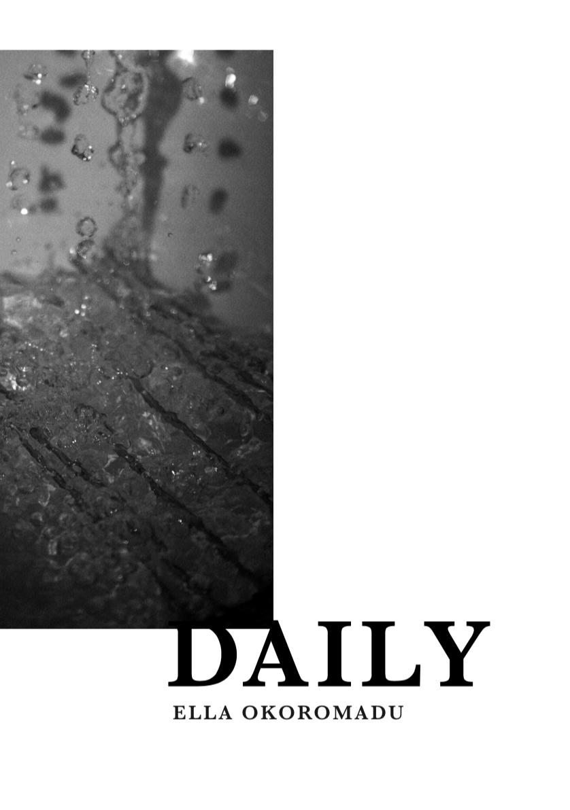

Medium ········· Print
Made ······ 2018
Disciplines ······· Image making, Art Direction,
Photography, Data Collection, Book Binding
Medium ········· Print
Made ······ 2018
Disciplines ······· Image making, Art Direction,
Photography, Book Binding
Medium ········· Print
Made ······ 2018
Disciplines ······· Printmaking, Art Direction,
Poetry, Book Binding
Medium ········· Print & Animation
Made ······ 2018
Disciplines ······· Art Direction, Image making,
Data Collection
Medium ········· Print
Made ······ 2018
Disciplines ······· Art Direction, Photography,
Poetry, Photography
This brief involved me having to investigate the ways of which inputs and outputs come into design and specifically my design practice.
Thus, I have challenged the notions of focal points and how our perceptions of said focal points influence what we consider as important in our daily lives.
↩ back
This brief asked me to look into what exactly it meant to ‘publish’ and what is incorporated into said published things. Inevitably makes me focus on the main aspects
of what found data/information I was putting into the publication; and therefore looking at the fundamental importance and deeper meaning of the entire concept.
So, I produced a series of publications that used data that I have unknowingly collected through my social media activities, to psychoanalyse and introspect my character/
identity as another person living on social media.
↩ back
I was asked to investigate the deeper realms of pictorial and basic forms and the meaning that go behind it to then influence and inform meanings to the viewers.
So using this brief, I have challenged the notions of what the ‘perfect circle’ is and how our perceptions influence the way we think about the basic shape.
↩ back
Within this live group brief I was asked to investigate the ways of which we can present ways of travelling around London using TFL and also how this can be improved in the future.
So using this brief, my group and I have challenged the notions of experience and environments as well as providing abstract information from within the London stations about popular attractions outside
My idea was to create a publication that explores the meanings of what a ‘perfect circle’ is and after looking into the meanings of what perception/ visual perception means. Subsequently, this enabled me to
come to the conclusion that I would create an illustration based zine that would be from the perspective of the circle, and how it feels under pressure to be perfect all the time.
↩ back
-
-

-

-
-
-
-
-
The world is full of individuals with their own individual ways of thinking and existing. That being said, individuality does not excuse. Freedom of thought and action has led
small groups to abuse this in spite and without regard for others. Our ancestors did not have this freedom, for if they did, history would’ve been very much different.
Moving to Essex at the age of 11 from East London had its cons as well as pros. Day to day life changed and I was faced with things that others wouldn’t consider as important.
This is a collection of my daily thoughts and my experiences. Handle it with care.
↩ back